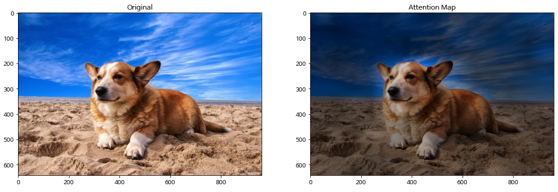

(GIF animation, zooming in on Attention part of model diagram)
— work in progress. not ready yet —
Preface
Transformer neural network models finally “clicked” for me this summer! For 4 years, I’d felt confused about them despite having done a lot of study (see #References). They seem to have so many “moving parts,” so the complexity of the model was daunting for me (and apparently many others).
What finally helped was watching Andrej Karpathy’s excellent YouTube tutorial [1] for the second time, when I noticed he homed in on the Attention part of the model and explained it as being a weighted average of words. I believe that if you grasp that part, then everything else about the Transformer is just “bells and whistles” that make it work better.
Note
Throughout this tutorial I will use the phrase “Attention is just…” to share different perspectives that have helped me understand.
Forming Intuition
Certain parts of an input matter more than others. For example, when you look at an image, you probably focus on objects in the foreground more than the background. For example, in this picture, most people (and AI systems!) will focus attention on the dog:

Figure 1. Example of attention being given to a foreground object, like this cute doggy! In right image, the background is darkened compared to the foreground, indicating that the foreground is receiving more attention than the background. (Source: Eunkwang Jeon, ViT-pytorch)
Alternatively, when you’re reading or listening to a speaker, certain words carry more weight than others and contribute differently to the meaning formed in your mind. Consider the following sentence:
“Please go to the store and get some milk.”
If you’re trying understand the command being given, the words “go”, “store”, “get”, and “milk” probably matter the most to you. If what you’re interested in is the tone (e.g. “is the speaker being polite?”) then probably the “Please” would matter most.
Since the topic of Attention often comes up in the context of Natural Language Processing (NLP), we’ll stick to text for this lesson, but know that “Vision Transformers” for image processing are definitely a thing.
Note
Attention is just a way to give certain parts of an input more weight than others.
On computers, the way we often emphasize certain parts of an array more than others is to multiply them by another array that has the “weights” to be assigned. In some other contexts, the “weights” array may be also called a “mask”, such as a “hard mask” of 1’s and 0’s to turn on or off parts of the array, or a “soft mask” with floating-point values to emphasize certain elements.
Note
Attention is just a soft mask.
Let’s use the sample sentence above, and make up some mask weights to stress the relative importants of different words. We’ll display the weights a colorbar to visualize their magnitude (darker= more weight):
Show the code
import numpy as np import pandas as pd from IPython.display import HTML, displayinput="Please go to the store and get some milk"words =input.split()weights = [0.5,.9,0.1,0.0,.8,0.1,.93,0.1,.98] df = pd.DataFrame({"word":words,"weight":weights})display(df.set_index('word').T.style.background_gradient(vmin=0, vmax=1).format(precision=3).hide())print(f"Sum of mask weights = {mask.sum():.3g}")
Please
go
to
the
store
and
get
some
milk
0.500
0.900
0.100
0.000
0.800
0.100
0.930
0.100
0.980
Sum of mask weights = 4.41
Tip
In the above example, I made up a weight of zero for “the” because it really doesn’t matter. The meaning of the sentence would still be unambiguous without “the”. We’ll use this trick of setting some weights to zero later on when we talk about “Masked Attention” for the Decoder part of the Transformer.
Weighted Averaging
We’ll make it so that the weights all add up to one. If all \(N\) words were weighted equally, the weight values would all be \(1/N\). For other weighting schemes, we divide the mask weights by their sum to get our attention weights. For the example sentence above, dividing by the sum gives us:
When we convert the word strings to numbers (later), we will weight them appropriately. These weights are literally the attention. To put it differently:
Note
Attention is just a weighted average of inputs.
History: A Little Context
Note
Attention is just a weighted Bag of Words.
Video: I Wrote A Song
Making it Mathematical
Similarity
Trying it Out
References
I recommend any of these the following. Seriously, I studied all of these and they’re great. Things just didn’t “click” for me until late in life I guess. LOL.
My trajectory was first the original paper[2], then Jay Alammar’s “The Illustrated Transformer” [3], then the Coursera course [4] co-taught by one of the original Transformer paper authors, then Brendan Rohrer’s great post [5], then Jeremy Jordan’s tutorial [6]. Then a couple years later Karpathy’s video [1], with a follow-up of CodeEmporiums’s video [7].
I also recommend Daniel Dugas’ “GPT on a Napkin” [8], but didn’t learn of it until later.